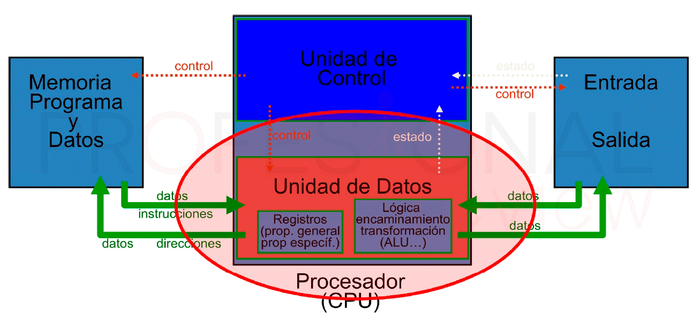
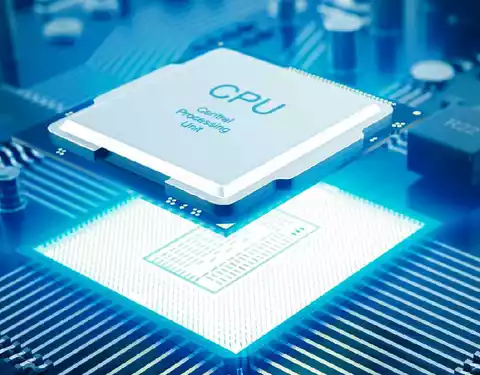

Un procesador, incluye tanto registros visibles por el usuario como registros de control/estado. Los registros visibles por el usuario pueden ser de uso general o tener una utilidad especial, mientras que los registros de control y estado se usan para controlar el funcionamiento del procesador, un claro ejemplo es el contador de programa. Lleva a cabo una gran variedad de: • Cálculos • Comparaciones numéricas • Transferencias de datos como respuesta a las peticiones de los programas que están siendo ejecutados en memoria. La CPU controla las operaciones básicas del ordenador enviando y recibiendo señales de control, direcciones de memoria y datos de un lugar a otro de la computadora a través de un grupo de canales llamados BUS.
La Unidad Central de Proceso está constituida internamente por: • La Unidad de Control • Unidad Aritmético-Lógica
Unidad Aritmético-Lógica (ALU) Recibe los datos sobre los que efectúa operaciones de cálculo y comparaciones. Toma decisiones lógicas (determina si una afirmación es correcta o falsa mediante reglas del algebra de Boole) y devuelve luego el resultado. Todo ello bajo supervisión de la unidad de control.
La Unidad de Control
La unidad de control le indica al resto del sistema como llevar a cabo las instrucciones de un programa. Comanda las señales electrónicas entre la memoria y la unidad aritmético-lógica, y entre el CPU y los dispositivos de entrada y salida. Para ejecutar cualquier programa, cada comando del mismo se desglosa en instrucciones.
Los procesadores utilizan la segmentación de instrucciones para acelerar la ejecución. La segmentación de cauce se puede dividir en ciclo de instrucción en varias etapas separadas que operan secuencialmente, tales como la captación de instrucción, decodificación de instrucción, cálculo de direcciones de operando, ejecución de instrucción y estructura del operando resultado.
A continuación se muestra cómo se organiza un procesador, para esto se tiene que considerar los siguientes requisitos:
Captar instrucciones: el procesador lee una instrucción de memoria (registro, cache o memoria principal).
Interpretar instrucción: la instrucción se codifica para determinar qué acción es necesario.
Captar datos: la ejecución de una instrucción puede exigir leer datos de memoria o de un módulo de E/S.
Procesar datos: la ejecución de una instrucción puede exigir llevar a cabo alguna operación aritmética o lógica con los datos.
Escribir datos: los resultados de una ejecución pueden exigir escribir datos en la memoria o en el módulo de E/S.
Para hacer estas cosas, el procesador necesita almacenar instrucciones y datos temporalmente mientras una instrucción está ejecutándose, en otras palabras el procesador necesita una pequeña memoria interna, también llamados registros.
 En esta figura se muestra una visión simplificada de un procesador, que indica su conexión con el resto de sistema, a través del bus del sistema. La ALU lleva a cabo el verdadero cálculo o procesamiento de datos. La unidad de control controla la transferencia de datos e instrucciones así a dentro y así afuera del procesador, y el funcionamiento de la ALU.
Además la figura muestra una memoria interna mínima, que consta de un conjunto de posiciones de almacenamiento llamadas registros.
En esta figura se muestra una visión simplificada de un procesador, que indica su conexión con el resto de sistema, a través del bus del sistema. La ALU lleva a cabo el verdadero cálculo o procesamiento de datos. La unidad de control controla la transferencia de datos e instrucciones así a dentro y así afuera del procesador, y el funcionamiento de la ALU.
Además la figura muestra una memoria interna mínima, que consta de un conjunto de posiciones de almacenamiento llamadas registros.
También se muestran los elementos básicos típicos de la ALU. Hay que observar la similitud entre la estructura interna del computador en su totalidad y la estructura interna del procesador. En ambos casos hay una pequeña colección de elementos principales (computador: procesador, E/S, memoria; procesador: unidad de control, ALU, registros) conectados por caminos de datos.
2.2 Estructura de registros. ¿Qué son los registros del CPU?
Se emplean para controlar las instrucciones en ejecución, manejar direccionamiento de memoria y propiciar la capacidad aritmética. Los registros vienen de tres tipos: datos, direcciones e índice, que tiene lugar en casi todos los aspectos de la operación del CPU. El tamaño de un registro depende del CPU; los más simples tienen registros que aceptan 8 o 16 bits de datos y los más complejos tienen registros de 32, 48 o 64 bits.
Clasificación de los Registros
Registro de datos: Un CPU puede funcionar con datos en uno de tres modos: entre dos registros, entre registros y una ubicación de Memoria de acceso al azar (RAM - Random-Access Memory) y entre dos ubicaciones RAM. Como el CPU está conectado directamente a los registros, las operaciones que implican dos registros son las más rápidas; las que se dan entre ubicaciones RAM son las más lentas. Es decir, junta dos registros, añade un registro a una ubicación RAM, o añade dos ubicaciones RAM.
Registro de direcciones: Para que un CPU pueda almacenar y recuperar datos en RAM, debe tener la dirección de la memoria de la información. Esas operaciones que implican RAM usan registros de dirección de memoria. EL CPU no realiza aritmética en estos registros; en cambio, los usa para ubicar datos que necesita.
Registro de índice: Un CPU no puede hacer matemáticas en registros de datos, aunque puede hacerlo indirectamente con un registro de índice. Éste trabaja con los registros de datos, permitiendo a un programa procesar hilos de información eficazmente.
Registros de segmento: Un registro de segmento tiene 16 bits de longitud y facilita un área de memoria para direccionamiento conocida como segmento actual. Registro Cs: el dos almacena la dirección inicial del segmento de código de un programa en el registro CS. Indica la dirección de una instrucción que es buscada para su ejecución. Registro Ds: genera una referencia a la localidad de un byte específico en el segmento de datos. Registro SS: permite la colocación en memoria de una pila, para almacenamiento temporal de dirección y datos. Registro ES: se utiliza para algunas operaciones con cadenas de caracteres se utiliza para el manejo de direccionamiento de memoria.
Registros de propósito general: Los registros de propósito general son el AX, BX, CX, y DX, de 16 bits. Cada uno de ellos se divide en dos registros de 8 bits, llamados AH y AL, BH y BL, CH y CL, y, DH y DL, H significando High (alto) y L significando Low (bajo), indicando la parte alta o la parte baja del registro correspondiente de 16 bits. Registro AX: El registro AX es el registro acumulador, es utilizado para operaciones que implican entrada/salida, y multiplicación y división (estas dos últimas en conjunto con el registro DX). Registro BX: El registro BX es el registro base, y es el único registro de propósito general que puede ser un índice para direccionamiento indexado. Registro CX: El registro CX es conocido como el registro contador. Puede contener un valor para controlar el número de veces que un ciclo se repite o un valor para corrimiento de bits. Registro DX: El registro DX es el registro de datos. En algunas operaciones se indica mediante este registro el número de puerto de entrada/salida, y en las operaciones de multiplicación y división de 16 bits se utiliza junto con el acumulador AX.
Registros de apuntadores: Los registros SP (apuntador de pila) y BP (apuntador base) están asociados con el registro SS y permiten al sistema acceder a datos en el segmento de la pila. Registro SP: El apuntador de pila de 16 bits está asociado con el segmento SS y proporciona un valor de desplazamiento que se refiere a la palabra actual que está siendo procesada en la pila. Registro BP: El apuntador base de 16 bits facilita la referencia de parámetros dentro de la pila.

Registros de banderas: Es un registro de 16 bits, de los cuales nueve sirven para indicar el estado actual de la máquina y el resultado del procesamiento. La tabla contiene 16 posiciones (de 0 a 15), que son los 16 bits del registro de banderas, numeradas de derecha a izquierda. La posición 0 la encontraremos a la derecha y la posición 15 a la izquierda.
Los bits de las banderas son las siguientes:
OF (overflow, desbordamiento): Indica desbordamiento del bit de mayor orden después de una operación aritmética de números con signo (1=existe overflow; 0=no existe overflow). Para operaciones sin signo, no se toma en cuenta esta bandera. DF (dirección): Controla la selección de incremento o decremento de los registros SI y DI en las operaciones con cadenas de caracteres (1=decremento automático; 0=incremento). La bandera DF se controla con las instrucciones STD y CLD. IF (interrupción): Controla el disparo de las interrupciones (1=habilita las interrupciones; 0=deshabilita las interrupciones). La interrupción no enmascarable es la única que no puede ser bloqueada por esta bandera. El estado de la bandera IF se controla con las instrucciones STI y CLI. TF (trampa): Permite la operación del procesador en modo de depuración (paso a paso). SF (signo): Contiene el signo resultante de una operación aritmética (0=positivo; 1=negativo). ZF (cero): Indica el resultado de una operación aritmética o de comparación (0=resultado diferente de cero; 1=resultado igual a cero). AF (acarreo auxiliar): Contiene el acarreo del bit 3. Esta bandera se prueba con las instrucciones DAA y DAS para ajustar el valor de AL después de una suma o resta BCD. PF (paridad): Indica si el número de bits 1, del byte menos significativos de una operación, es par (0=número de bits 1 es impar; 1=número de bits 1 es par). CF (acarreo): Contiene el acarreo del bit de mayor orden después de una operación aritmética; también almacena el contenido del último bit en una operación de desplazamiento o de rotación.
Registro de punteros de instrucción: El registro IP de 16 bits contiene el desplazamiento de dirección de la siguiente instrucción que se ejecuta. El IP está asociado con el registro CS en el sentido de que el IP indica la instrucción actual dentro del segmento de código que se está ejecutando actualmente en la memoria.
2.3 El ciclo de instrucción.
Un ciclo de instrucción incluye los siguientes subciclos:
Captación: llevar la siguiente instrucción de la memoria al procesador. Ejecución: interpretar el código de operación y llevar a cabo la operación indicada. Interrupción: si las interrupciones están habilitadas y ha ocurrido una interrupción, guardar el estado del proceso actual y atender la interrupción.
El Ciclo Indirecto La ejecución de una instrucción puede involucrar a uno o más operandos en memoria, cada uno de los cuales requiere un acceso a memoria. Además, si se usa direccionamiento indirecto serán necesarios accesos a memoria adicionales. Podemos considerar la captación de direcciones indirectas como un subciclo de instrucción más. El resultado se muestra en la Figura 12.4. La principal línea de actividad consiste en alternar las actividades de captación y ejecución de instrucciones. Después de que una instrucción sea captada, es examinada para determinar si incluye algún direccionamiento indirecto. Si es así, los operandos requeridos se captan usando direccionamiento indirecto. Tras la ejecución se puede procesar una interrupción antes de la captación de la siguiente instrucción.
Una vez que una instrucción es captada, deben identificarse sus campos de operandos. Se capta entonces de la memoria cada operando de entrada, y este proceso puede requerir direccionamiento indirecto. Los operandos ubicados en registros no necesitan ser captados. Una vez que se ejecuta la operación, puede ser necesario un proceso similar para almacenar el resultado en la memoria principal.
2.3.1 Ciclo Fetch-Decode-Execute
Procedimiento bien establecido
Fases(o sub ciclos): búsqueda y ejecución (cada fase tiene etapas o actividades)
FASE FETCH Cargar la siguiente instrucción Incrementar el secuenciador Interpretar la Instrucción
FASE EXECUTE Cargar los operandos Ejecutar la operación Guardar el resultado Verificar si hay solicitudes de interrupción
2.3. Elementos Para Construir El CPU.
Un conjunto de instrucciones o repertorio de instrucciones, juego de instrucciones o ISA (del inglés Instruction Set Architecture, Arquitectura del Conjunto de Instrucciones) es una especificación que detalla las instrucciones que una CPU de un ordenador puede entender y ejecutar, o el conjunto de todos los comandos implementados por un diseño particular de una CPU. El término describe los aspectos del procesador generalmente visibles a un programador, incluyendo los tipos de datos nativos, las instrucciones, los registros, la arquitectura de memoria y las interrupciones, entre otros aspectos.
Existen principalmente de 3 tipos: CISC (Complex Instruction Set Computer), RISC (Reduced Instruction Set Computer) y SISC (Simple Instruction Set Computing).
La arquitectura del conjunto de instrucciones (ISA) se emplea a veces para distinguir este conjunto de características de la microarquitectura, que son los elementos y técnicas que se emplean para implementar el conjunto de instrucciones. Entre estos elementos se encuentran las microinstrucciones y los sistemas de caché.
Procesadores con diferentes diseños internos pueden compartir un conjunto de instrucciones; por ejemplo, el Intel Pentium y AMD Athlon implementan versiones casi idénticas del conjunto de instrucciones x86, aunque tienen diseños diferentes.
Características que debe tener un conjunto de instrucciones: Las características que se pretende que tenga un conjunto de instrucciones son cuatro, principalmente: Completo: Que se pueda realizar en un tiempo finito cualquier tarea ejecutable con un ordenador (computable o decidible). Eficiente: Que permita alta velocidad de cálculo sin exigir una elevada complejidad en su UC y ALU y sin consumir excesivos recursos (memoria), es decir, debe cumplir su tarea en un tiempo razonable minimizando el uso de los recursos. Autocontenidas: Esto es, que contengan en sí mismas toda la información necesaria para ejecutarse. Independientes: Que no dependan de la ejecución de alguna otra instrucción.
Se puede comprobar que para que un conjunto de instrucciones sea completo solo se necesitan cuatro instrucciones: Escritura Mover a la izquierda una posición y leer Mover a la derecha una posición y leer Parar
En esta idea se basan las arquitecturas RISC, no obstante, con este conjunto no se puede conseguir la eficiencia del repertorio de instrucciones por lo que en la práctica el conjunto suele ser más amplio en aras de conseguir un mejor rendimiento, tanto en uso de recursos como en consumo de tiempo.
 2.3.4 Modos de Direccionamiento.
Contar con diferentes formatos de instrucciones, implica contar con diferentes formas de obtener los operandos de las instrucciones. Por lo general a estas múltiples formas se les conoce como modos de direccionamiento. Los modos de direccionamiento en MIPS son:
Direccionamiento por registro, donde los operandos son registros. Los datos a operar están contenidos en 2 registros de 32 bits y el resultado será colocado en otro registro, del mismo tamaño. Ejemplos de instrucciones que usan este modo de direccionamiento: add, sub, slt, etc.
Direccionamiento base o desplazamiento, donde uno de los operandos está en una localidad de memoria cuya dirección es la suma de un registro y una constante que forma parte de la misma instrucción. Ejemplos de instrucciones que usan este modo de direccionamiento: lw, sw, etc.
Direccionamiento inmediato, donde uno de los operandos es una constante que está en la misma instrucción. Ejemplos de instrucciones que usan este modo de direccionamiento: addi, slti, etc.
Direccionamiento relativo al PC, donde se forma una dirección sumando una constante, que está en la instrucción, con el registro PC (Program Counter). El resultado de la suma corresponde a la dirección destino si un brinco condicional se va a realizar. Ejemplos de instrucciones que usan este modo de direccionamiento: beq y bne.
Direccionamiento pseudo directo, donde la dirección destino de un salto corresponde a la concatenación de 26 bits que están en la misma instrucción con los bits más significativos del PC. Ejemplos de instrucciones que usan este modo de direccionamiento: j y jal.
Es importante mencionar que estamos estudiando una arquitectura con direcciones de 32 bits, sin embargo, MIPS, como muchas otras arquitecturas, tiene una extensión que maneja direcciones de 64 bits. Esto como una respuesta a la necesidad de manejar programas cada vez más grandes.
2.4 Casos de estudio de CPU reales.
I-8086
Los modos de direccionamiento del 8086 (Crawford & Gelsinger, 1987) son muy irregulares. Los registros del procesador, se usan para contener los datos con que se está trabajando puesto que el acceso a los registros es mucho más rápido que los accesos a memoria. Se pueden realizar operaciones aritméticas y lógicas, comparaciones, entre otras. Hay un campo para un registro (reg), que especifica uno de los operandos, y otros dos campos (mod y r/m) para el otro.
Los modos del 8086 son indirectos por registro, indexados o directos por registro.
Registros Propósito General:
Registro AX: El registro AX es el registro acumulador, es utilizado para operaciones que implican entrada/salida, y multiplicación y división (estas dos últimas en conjunto con el registro DX)
Registro BX: El registro BX es el registro base, y es el único registro de propósito general que puede ser un índice para direccionamiento indexado
Registro CX: El registro CX es conocido como el registro contador. Puede contener un valor para controlar el número de veces que un ciclo se repite.
Registro DX: El registro DX es el registro de datos.
Registros Índice:
Registro SI: El registro índice fuente de 16 bits es requerido por algunas operaciones con cadenas de caracteres.
Registro DI: El registro índice destino también es requerido por algunas operaciones con cadenas de caracteres.
Registros Apuntadores:
Registro SP: Apuntador de pila de 16 bits proporciona un valor de desplazamiento que se refiere a la palabra actual que está siendo procesada en la pila.
Registro BP: El apuntador base de 16 bits facilita la referencia de parámetros dentro de la pila.
Motorola 68000
En el Motorola 68000 el mismo direccionamiento lleva implícito el tipo de registro sobre el que trabaja (direcciones o datos). Está basado en dos bancos de 8 registros de 32 bits. Un banco es de datos (Dn) y el otro de punteros (An). Además contiene un contador de programa de 32 bits y un registro de estado de 16 bits. Los registros de datos (D0 a D7) se pueden usar como registros de 32 bits (.l), 16 bits (.w) y 8 bits (.b). Cualquiera de ellos puede usarse como acumulador, índice o puntero. Acepta los siguientes modos de direccionamiento:
Implícito (o inherente).
Inmediato.
Absoluto.
Directo a registro.
Indirecto.
Relativo a PC con desplazamiento.
Relativo a PC con índice y desplazamiento.
80386 La CPU está compuesta por la unidad de ejecución y la unidad de instrucciones. La unidad de ejecución contiene los ocho registros de 32 bits de propósito general que se utilizan para el cálculo de direcciones y operaciones con datos y un barrel shifter de 64 bits que se utiliza para acelerar las operaciones de desplazamiento, rotación, multiplicación y división. Para este microprocesador existe un modo nuevo que requiere un byte adicional denominado SIB (escala, índice, base) que se añade al byte de operandos y cuyo formato es el siguiente: Ese byte adicional especifica un factor de escala y dos registros (base e índice).
El 80386 tiene registros de 32 bits en las siguientes categorías:
Registros de propósito general.
Registros de segmento.
Puntero de instrucciones
Indicadores.
Registros de control (nuevos en el 80386).
Registros de direcciones de sistema.
Registros de depuración (debug) (nuevos en el 80386).
Registros de test (nuevos en el 80386).
Procesador I3
Línea de microprocesadores Intel, gama baja. 3 era generación 2010.
Características:
Procesador de 2 núcleos
4 hilos de procesamiento en paralelo
Tarjeta gráfica integrada
Controlador de memoria
Controlador PCI Express 2.0 integrado
Modos de direccionamiento y formatos
Un modo de direccionamiento especifica la forma de calcular la dirección de memoria efectiva de un operando mediante el uso de la información contenida en registros y / o constantes, contenida dentro de una instrucción de la máquina o en otra parte.
Direccionamiento Implícito: En este modo de direccionamiento no es necesario poner ninguna dirección de forma explícita, ya que en el propio código de operación se conoce la dirección del (de los) operando(s) al (a los) que se desea acceder o con el (los) que se quiere operar.
Direccionamiento Inmediato: En este modo el operando es especificado en la instrucción misma. En otras palabras, una instrucción de modo inmediato tiene un campo de operando en vez de un campo de dirección. El campo del operando contiene el operando actual que se debe utilizar en conjunto con la operación especificada en la instrucción. Las instrucciones de modo inmediato son útiles para inicializar los registros en un valor constante.
Cuando el campo de dirección especifica un registro del procesador, la instrucción se dice que está en el modo de registro.
Direccionamiento Directo: El campo de operando en la instrucción contiene la dirección en memoria donde se encuentra el operando. En este modo la dirección efectiva es igual a la parte de dirección de la instrucción. El operando reside en la memoria y su dirección es dada directamente por el campo de dirección de la instrucción. En una instrucción de tipo ramificación el campo de dirección especifica la dirección de la rama actual.
Direccionamiento Indirecto: El campo de operando contiene una dirección de memoria, en la que se encuentra la dirección efectiva del operando.
Direccionamiento Absoluto: El campo de operando contiene una dirección en memoria, en la que se encuentra la instrucción.
Direccionamiento Relativo: El registro referenciado implícitamente es el contador de programa. El campo de direcciones se trata como un número en complemento a 2, y representa un desplazamiento relativo al PC.
Direccionamiento con registro base: En este direccionamiento el registro referenciado contiene una dirección de memoria y el campo de dirección contiene un desplazamiento desde dicha dirección.
Direccionamiento indexado: El campo de direcciones referencia una dirección de memoria principal, y el registro referenciado contiene un desplazamiento positivo desde esa dirección. En el indexado se considera que el campo de direcciones es una dirección de memoria.
Direccionamiento autoincrementa: En este método, la dirección del operando se encuentra en un registro y éste es incrementado después de acceder al operando, en el tamaño del mismo
Direccionamiento autodecrementa: En este modo para obtener la dirección del operando hay que decremento un registro en el tamaño del operando; el nuevo contenido del registro después de efectuar esa operación es la dirección del operando. Casos de estudio Reales de CPU
I-8086: Los registros del procesador, se usan para contener los datos con que se está trabajando puesto que el acceso a los registros es mucho más rápido que los accesos a memoria. Se pueden realizar operaciones aritméticas y lógicas, comparaciones, entre otras. Los modos del 8086 son indirectos por registro, indexados o directos por registro.
Motorola 68000: El mismo direccionamiento lleva implícito el tipo de registro sobre el que trabaja (direcciones o datos). Está basado en dos bancos de 8 registros de 32 bits. Un banco es de datos (Dn) y el otro de punteros (An). Además contiene un contador de programa de 32 bits y un registro de estado de 16 bits.
80386: Para este microprocesador existe un modo nuevo que requiere un byte adicional denominado SIB (escala, índice, base) que se añade al byte de operandos, es útil para direccionar elementos de vectores de longitudes diferentes en bucles. Es una alternativa a los modos autoindexados que esta máquina no soporta.
2.4 Casos de estudio de CPU reales.
I-8086
Los modos de direccionamiento del 8086 (Crawford & Gelsinger, 1987) son muy irregulares. Los registros del procesador, se usan para contener los datos con que se está trabajando puesto que el acceso a los registros es mucho más rápido que los accesos a memoria. Se pueden realizar operaciones aritméticas y lógicas, comparaciones, entre otras. Hay un campo para un registro (reg), que especifica uno de los operandos, y otros dos campos (mod y r/m) para el otro.
Los modos del 8086 son indirectos por registro, indexados o directos por registro.
Registros Propósito General:
Registro AX: El registro AX es el registro acumulador, es utilizado para operaciones que implican entrada/salida, y multiplicación y división (estas dos últimas en conjunto con el registro DX)
Registro BX: El registro BX es el registro base, y es el único registro de propósito general que puede ser un índice para direccionamiento indexado
Registro CX: El registro CX es conocido como el registro contador. Puede contener un valor para controlar el número de veces que un ciclo se repite.
Registro DX: El registro DX es el registro de datos.
Registros Índice:
Registro SI: El registro índice fuente de 16 bits es requerido por algunas operaciones con cadenas de caracteres.
Registro DI: El registro índice destino también es requerido por algunas operaciones con cadenas de caracteres.
Registros Apuntadores:
Registro SP: Apuntador de pila de 16 bits proporciona un valor de desplazamiento que se refiere a la palabra actual que está siendo procesada en la pila.
Registro BP: El apuntador base de 16 bits facilita la referencia de parámetros dentro de la pila.
Motorola 68000 En el Motorola 68000 el mismo direccionamiento lleva implícito el tipo de registro sobre el que trabaja (direcciones o datos). Está basado en dos bancos de 8 registros de 32 bits. Un banco es de datos (Dn) y el otro de punteros (An). Además contiene un contador de programa de 32 bits y un registro de estado de 16 bits. Los registros de datos (D0 a D7) se pueden usar como registros de 32 bits (.l), 16 bits (.w) y 8 bits (.b). Cualquiera de ellos puede usarse como acumulador, índice o puntero. Acepta los siguientes modos de direccionamiento: Implícito (o inherente). Inmediato. Absoluto. Directo a registro. Indirecto. Relativo a PC con desplazamiento. Relativo a PC con índice y desplazamiento.
80386 La CPU está compuesta por la unidad de ejecución y la unidad de instrucciones. La unidad de ejecución contiene los ocho registros de 32 bits de propósito general que se utilizan para el cálculo de direcciones y operaciones con datos y un barrel shifter de 64 bits que se utiliza para acelerar las operaciones de desplazamiento, rotación, multiplicación y división. Para este microprocesador existe un modo nuevo que requiere un byte adicional denominado SIB (escala, índice, base) que se añade al byte de operandos y cuyo formato es el siguiente: Ese byte adicional especifica un factor de escala y dos registros (base e índice).
El 80386 tiene registros de 32 bits en las siguientes categorías: Registros de propósito general. Registros de segmento. Puntero de instrucciones Indicadores. Registros de control (nuevos en el 80386). Registros de direcciones de sistema. Registros de depuración (debug) (nuevos en el 80386). Registros de test (nuevos en el 80386).
Procesador I3 Línea de microprocesadores Intel, gama baja. 3 era generación 2010. Características: Procesador de 2 núcleos 4 hilos de procesamiento en paralelo Tarjeta gráfica integrada Controlador de memoria Controlador PCI Express 2.0 integrado Modos de direccionamiento y formatos
Un modo de direccionamiento especifica la forma de calcular la dirección de memoria efectiva de un operando mediante el uso de la información contenida en registros y / o constantes, contenida dentro de una instrucción de la máquina o en otra parte.
Direccionamiento Implícito: En este modo de direccionamiento no es necesario poner ninguna dirección de forma explícita, ya que en el propio código de operación se conoce la dirección del (de los) operando(s) al (a los) que se desea acceder o con el (los) que se quiere operar.
Direccionamiento Inmediato: En este modo el operando es especificado en la instrucción misma. En otras palabras, una instrucción de modo inmediato tiene un campo de operando en vez de un campo de dirección. El campo del operando contiene el operando actual que se debe utilizar en conjunto con la operación especificada en la instrucción. Las instrucciones de modo inmediato son útiles para inicializar los registros en un valor constante. Cuando el campo de dirección especifica un registro del procesador, la instrucción se dice que está en el modo de registro.
Direccionamiento Directo: El campo de operando en la instrucción contiene la dirección en memoria donde se encuentra el operando. En este modo la dirección efectiva es igual a la parte de dirección de la instrucción. El operando reside en la memoria y su dirección es dada directamente por el campo de dirección de la instrucción. En una instrucción de tipo ramificación el campo de dirección especifica la dirección de la rama actual.
Direccionamiento Indirecto: El campo de operando contiene una dirección de memoria, en la que se encuentra la dirección efectiva del operando.
Direccionamiento Absoluto: El campo de operando contiene una dirección en memoria, en la que se encuentra la instrucción.
Direccionamiento Relativo: El registro referenciado implícitamente es el contador de programa. El campo de direcciones se trata como un número en complemento a 2, y representa un desplazamiento relativo al PC.
Direccionamiento con registro base: En este direccionamiento el registro referenciado contiene una dirección de memoria y el campo de dirección contiene un desplazamiento desde dicha dirección.
Direccionamiento indexado: El campo de direcciones referencia una dirección de memoria principal, y el registro referenciado contiene un desplazamiento positivo desde esa dirección. En el indexado se considera que el campo de direcciones es una dirección de memoria.
Direccionamiento autoincrementa: En este método, la dirección del operando se encuentra en un registro y éste es incrementado después de acceder al operando, en el tamaño del mismo
Direccionamiento autodecrementa: En este modo para obtener la dirección del operando hay que decremento un registro en el tamaño del operando; el nuevo contenido del registro después de efectuar esa operación es la dirección del operando. Casos de estudio Reales de CPU
I-8086: Los registros del procesador, se usan para contener los datos con que se está trabajando puesto que el acceso a los registros es mucho más rápido que los accesos a memoria. Se pueden realizar operaciones aritméticas y lógicas, comparaciones, entre otras. Los modos del 8086 son indirectos por registro, indexados o directos por registro. Motorola 68000: El mismo direccionamiento lleva implícito el tipo de registro sobre el que trabaja (direcciones o datos). Está basado en dos bancos de 8 registros de 32 bits. Un banco es de datos (Dn) y el otro de punteros (An). Además contiene un contador de programa de 32 bits y un registro de estado de 16 bits. 80386: Para este microprocesador existe un modo nuevo que requiere un byte adicional denominado SIB (escala, índice, base) que se añade al byte de operandos, es útil para direccionar elementos de vectores de longitudes diferentes en bucles. Es una alternativa a los modos autoindexados que esta máquina no soporta.